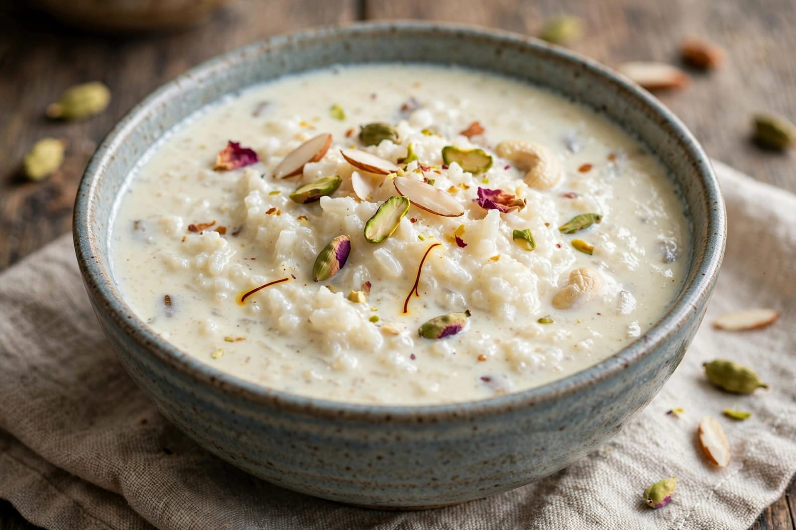
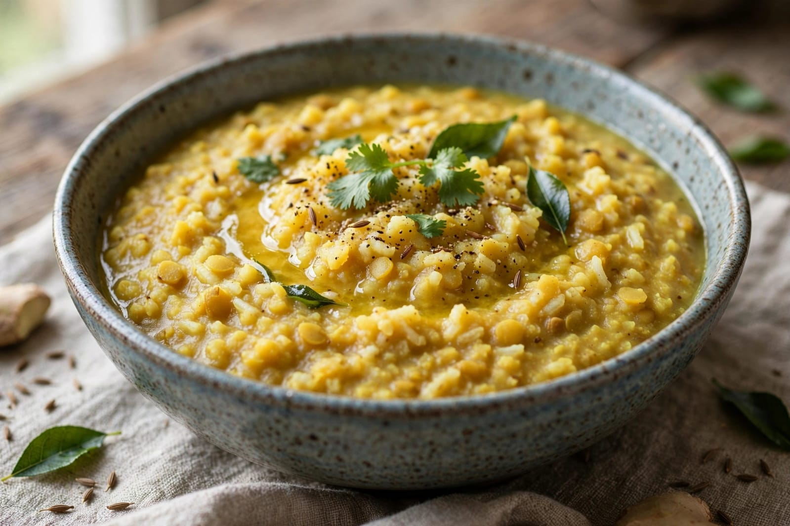
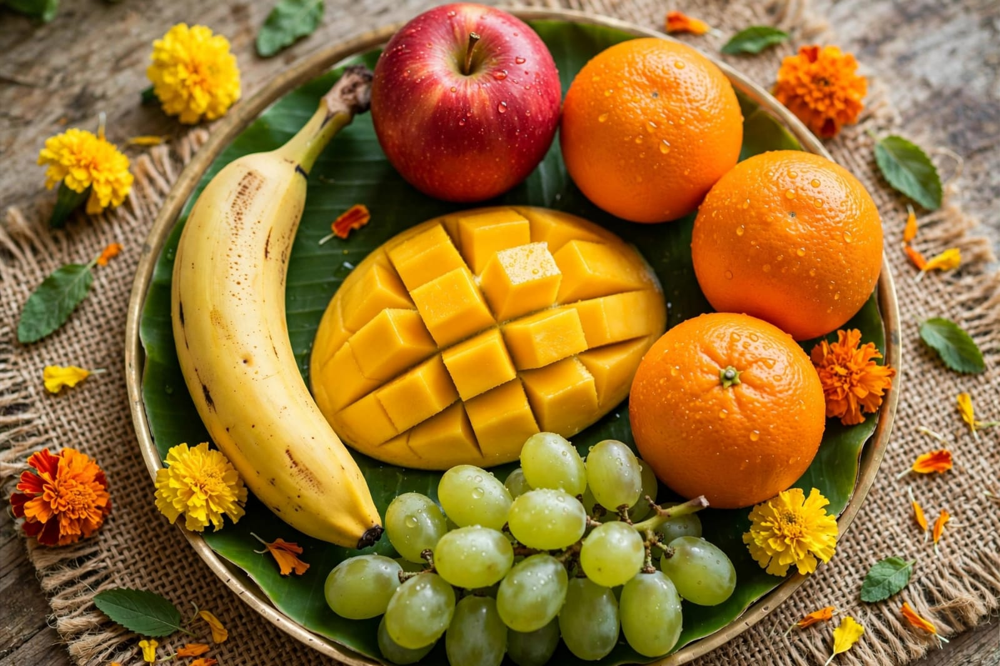

About Buddha Purnima
Buddha Purnima is an important festival celebrated by Buddhists. It is also known as Vesak or Buddha Jayanti. The festival is associated with Gautama Buddha. It is observed on the full moon day of the month of Vaisakha. The festival has great spiritual importance. Buddhists remember the life and teachings of Buddha. Buddha was born as Prince Siddhartha Gautama. He was born at Lumbini. Lumbini is located in present-day Nepal. Siddhartha belonged to the Shakya family. He lived a life of comfort during his early years. Later, he saw suffering in the world. He wanted to understand the cause of suffering. He left his royal life in search of truth. He followed a spiritual path for many years. He eventually attained enlightenment. He became known as the Buddha. Buddha means an awakened or enlightened person. Buddha shared his teachings with many people. His teachings focus on peace and wisdom. He taught people to avoid harmful actions. He encouraged kindness and compassion. He taught the importance of controlling desires. The Four Noble Truths are central to his teachings. The Noble Eightfold Path is also an important teaching. Buddha taught the value of right understanding. He encouraged right speech and right action. Meditation is an important Buddhist practice. Many people meditate on Buddha Purnima. Buddhist temples are decorated on the festival. Devotees visit temples to offer prayers. Buddhist monks conduct special prayers. People listen to teachings about Buddhism. Many devotees offer flowers and lamps. Some people donate food and other useful items. Charity is an important activity on this day. People try to follow peaceful and kind behavior. Buddha Purnima spreads the message of peace.
Buddha Purnima is celebrated in many countries. It is especially important in India and other Asian countries. Different countries have different traditions. Buddhist temples organize special programs. Devotees gather at temples for prayers. Buddha statues are cleaned and decorated. Flowers are offered as a sign of respect. Lamps may be lit around temples. Buddhist scriptures are read during the celebrations. Monks give spiritual teachings to devotees. Meditation sessions may be organized. People spend time in quiet reflection. Many devotees observe simple or vegetarian meals. Some people follow fasting according to their traditions. Charity and helping others are encouraged. People may donate food to poor people. Clothes and other useful items may also be donated. The festival encourages generosity. It teaches people to respect all living beings. Buddha's teachings promote non-violence. People are encouraged to live peacefully. The festival reminds people about compassion. It also teaches the importance of wisdom. Buddha taught the Middle Way. The Middle Way avoids extreme ways of living. Meditation helps people develop concentration. Mindfulness is an important Buddhist practice. People try to remain aware of their thoughts and actions. Buddha Purnima is a time for self-reflection. People think about how to improve their lives. Many communities organize peaceful processions. Religious and cultural programs may be held. Bodh Gaya is an important Buddhist pilgrimage place. It is associated with Buddha's enlightenment. Sarnath is another important place in Buddhist history. Buddha gave his first teaching at Sarnath. Kushinagar is associated with Buddha's final passing. These places are visited by many Buddhists. Buddha Purnima helps people remember Buddhist history. It promotes peace, kindness and understanding.
Buddha Purnima is a festival of peace and wisdom. It reminds people about the teachings of Gautama Buddha. The festival encourages compassion toward all living beings. People visit temples and offer prayers. Meditation is practiced by many devotees. Buddhist teachings are read and discussed. People try to develop peaceful thoughts. Charity and generosity are encouraged. Simple living is an important message of Buddhism. The festival teaches people to avoid violence. It encourages kindness toward others. Families may spend the day peacefully together. Devotees wear simple and clean clothes. Flowers and lamps are offered at temples. Buddhist monks conduct special ceremonies. People listen to spiritual teachings. Buddha Purnima is celebrated with devotion. It promotes harmony among people. The festival spreads a message of peace and compassion.
Special Foods

Kheer
A traditional sweet dish made with milk, rice and sugar.

Khichdi
A simple and nutritious dish made with rice and lentils.

Fresh Fruits
Fresh fruits are commonly included in simple vegetarian meals.